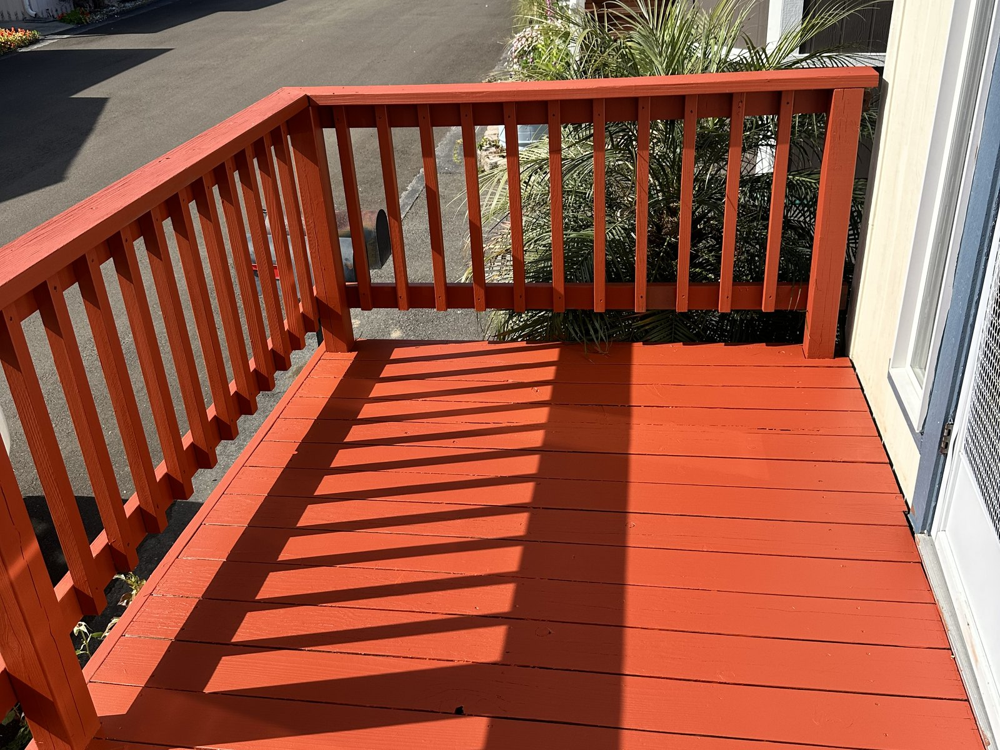
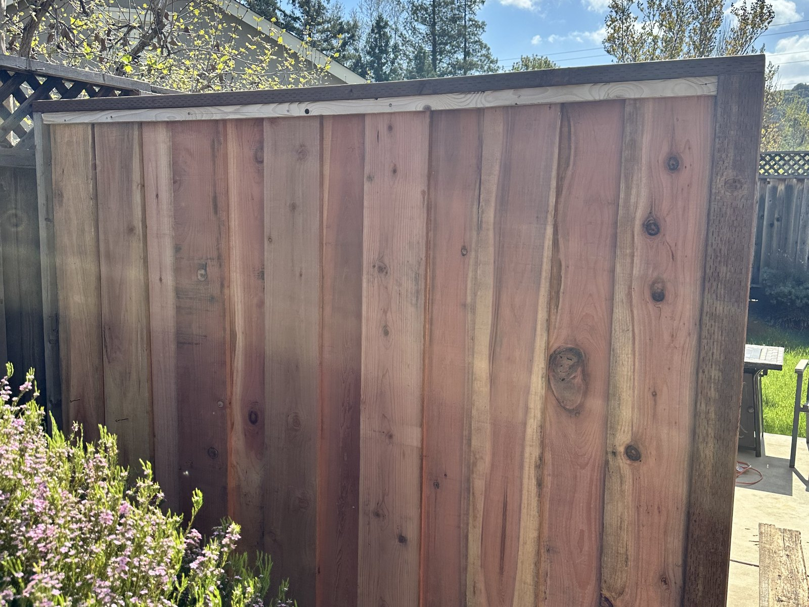
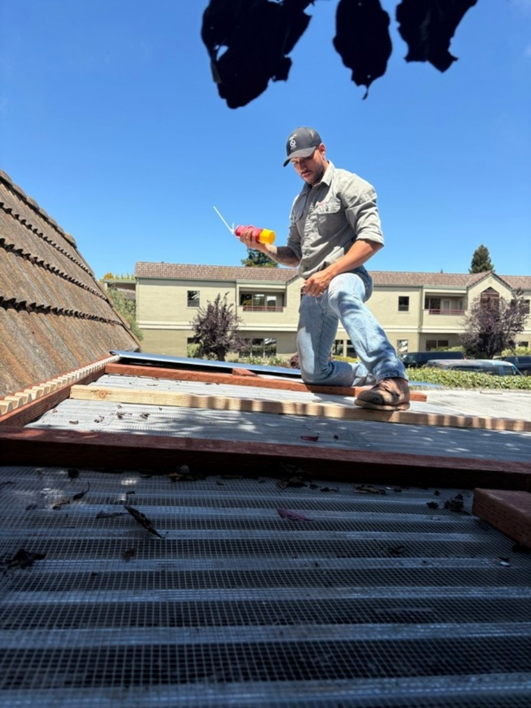

Deck repair
Residential work in Monterey
Big Iron Construction helps Monterey homeowners with residential repairs, weather-exposed exterior work, and practical carpentry completed with a clear scope.
Monterey work types

Deck repair

Fence repair

Gutter repair
Monterey homes take steady exposure from weather, moisture, salt air, and age, so small exterior failures rarely stay small. Big Iron handles deck repair, fence repair, roofline and gutter work, siding patches, fascia, trim replacement, gate resets, and exterior carpentry that protects the property and improves function.
We work around Monterey neighborhoods and nearby communities including New Monterey, Del Monte Beach, Skyline Forest, Fisherman's Flats, and surrounding residential areas. Some homes need one focused fix. Others need a practical punch-list approach where multiple exterior items are handled in the same scope. Either way, the work needs somebody who understands the field side, communicates clearly, and follows through.
Big Iron is set up for the jobs that live between a full remodel and a quick patch. That includes deck boards, railing repairs, fence and gate issues, trim and siding work, gutter corrections, small exterior builds, and other carpentry-related repairs that need a clean finish. The process stays direct and useful: send photos, explain what is happening, and we can tell you the best next step based on the actual scope.
For a Monterey project, call or text with the issue and a few photos. We will determine whether the work fits a focused repair scope or needs a custom estimate.
Monterey estimate
Already comparing written estimates?
Compare included work, exclusions, materials, responsibilities, schedule, price structure, changes, payments, warranty language, closeout, and unanswered questions—not just the total.
Open the free 12-question checklist
No email required. The checklist does not verify a contractor, review a contract, or choose a bid. The call/text and contact options above remain the direct paths for requesting Big Iron service.